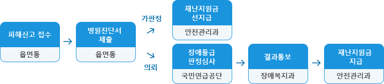
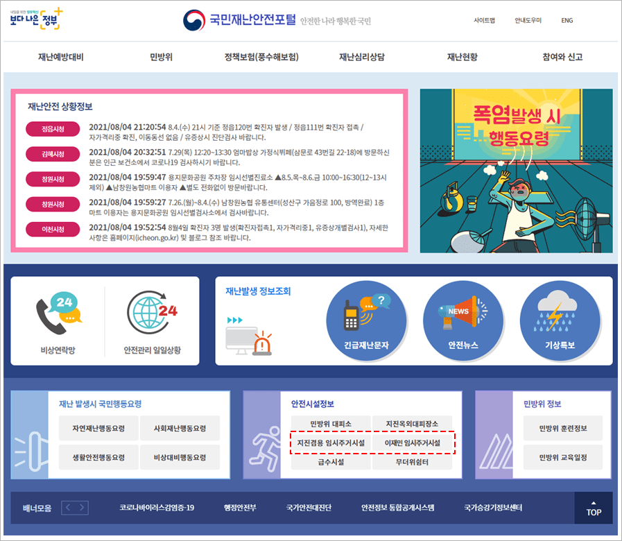

자연재해 지원제도 (지진재해 지원제도, 2019년 11월 기준)
지진재해로 사망한 분의 유족 또는 부상을 당한 자
「의연금품 관리·운영 규정」 제7조 규정에 따라 사망자·실종자의 유족과 부상자에게 아래와 같이 재난지원금을 지급
| 인명피해 (1인당) 상한액 | ||
|---|---|---|
| 사망자 · 실종자 유족 | 부상자 (산업재해보상보험법령) | |
| 1~7급 | 8~14급 | |
| 1,000만원 | 500만원 | 250만원 |
※ 유족은 직계가족 및 친족으로 생계를 같이 한 자
※ 부상자는 신체장해등급 14급 이상이어야 하나 우선 객관적 기준에서 향후 후유증 등으로 14급 이상이 예상될 시 피해 대상에 포함 (장해등급 기준.hwp)참조
※ 사망에 대해서는 신고접수 이후 정확한 원인 파악을 위해 경찰, 소방 당국에서 추가조사가 실시 될 수도 있음
① 피해신고서(피해신고서.hwp)를 작성하여 주민등록주소지에 신고 ※ 피해신고서가 주택피해 위주로 작성하게 되어 있으므로, 2.피해내용 부분에 인명피해라고 기재하면 인명피해로 접수됨
② 위의 신고접수 후, 병원 진단서를 발급받아 읍·면·동에 제출
①, ②의 절차가 끝나면 장해등급을 추정하여 재난지원 선지급 이후, 읍·면·동에서 국민연금공단에 장애등급 심사를 의뢰, 장애등급 판정을 받게 되면 정확한 판정 결과에 따라 재난지원금이 조정됨 ※ 장애등급 심사는 약 1~2개월 정도의 기간이 소요될 수 있음
[ 인명피해 재난지원금 지급 절차 ]
지진으로 주택이 파손되었거나, 계속되는 여진에 불안을 느껴 임시거처가 필요한 자
주택피해 이재민 및 일시대피자들을 위해 임시주거시설(체육관, 마을회관 등)을 지정·운영
※ 임시주거시설에 대해서는 지진발생 후 긴급 안전점검을 시행하여 안전이 확보된 시설을 대상으로 운영하고 있음
* 지자체에서 이재민 등록 및 입·퇴소 현황을 관리하기 위해 작성한 것
[ 임시주거시설(실내구호소) 위치 확인방법 ]
재해발생 전 : 국민재난안전포털 (www.safekorea.go.kr) 에서 확인 가능  재해발생 후 : 시·군·구 홈페이지에서 확인 가능하며, 재난 발생지역의 이장·통장 등을 통해 직접 안내됨